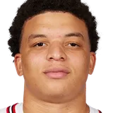

Played 2 seasons for 2 teams; his teams went 23–24 in his games.
Jump to: Record by opponent · Season by season · Teammate help
Compare Kennedy Chandler with…
Final NBA finish, season by season
Title Finals Other playoffs Missed playoffs. #1 = champion; the dashed line is last place that season. Each point opens that season's final standings.
All 30 teams ranked in 2022-23, his best finish (#10)Teammate help
 Jaren Jackson Jr5.01 season
Jaren Jackson Jr5.01 season Ja Morant1.01 season
Ja Morant1.01 season Dillon Brooks0.51 season
Dillon Brooks0.51 season
Career
Career records (W–L, W − L, with and without) include 2026-27 games through Nov. 24, 2026; season counts and finishes are through 2025-26. Each card opens its board in the same scope. How we count.

Latest completed seasons
Season by season
Newest first; every header sorts. Final NBA finish is the team's rank among all teams that season (#1 = champion) and opens that season's standings. "Without him" uses the team-season window; the span line counts only the games between his first and last game for the team.
On/off, starts and close games
From the lineup data, 1996-97 on. On/off is net points per 100 possessions with him on the floor minus off, a different unit from the win-rate gaps. Started and off the bench are team records in those games; close games are those within 5 points in the last 5 minutes with him on the floor.
Teammate help by season
Help this season = Teammates Score points for honors won that season by teammates who shared a game with him, with every teammate that adds to it. Only honors won in that same season count. How help works.
- 2025-26
 Utah
Utah
 Ace Bailey All-Rookie 2nd0.12510 g
Ace Bailey All-Rookie 2nd0.12510 g
Help this season: 0.125+ = 0.125 Ace Bailey
Other teammates (no honors that season): Oscar Tshiebwe 11 g, John Konchar 11 g, Bez Mbeng 10 g, Cody Williams 10 g, Kyle Filipowski 9 g, Brice Sensabaugh 8 g, Elijah Harkless 5 g, Blake Hinson 3 g, Sviatoslav Mykhailiuk 2 g
- 2022-23
 Memphis
Jaren Jackson Jr DPOYAll-StarAll-Def 1st527 gJa Morant All-Star123 gDillon Brooks All-Def 2nd0.534 g
Memphis
Jaren Jackson Jr DPOYAll-StarAll-Def 1st527 gJa Morant All-Star123 gDillon Brooks All-Def 2nd0.534 g
Help this season: 6.5 = 5 Jaren Jackson Jr + 1 Ja Morant + 0.5 Dillon Brooks
Other teammates (no honors that season): David Roddy 35 g, Tyus Jones 35 g, Santiago Aldama 32 g, Xavier Tillman 31 g, John Konchar 31 g, Desmond Bane 24 g, Brandon Clarke 23 g, Jake LaRavia 21 g, Steven Adams 20 g, Kenneth Lofton 20 g, Ziaire Williams 18 g, Vince Williams Jr 14 g, Luke Kennard 11 g
Record against each opponent
Regular season, through 2025-26 (2026-27 games not included): 47 games, 23–24, against 26 franchises.
Grouped by franchise (named as today); game lists keep each team's name that season. Filters and the tab are kept in the URL, so a filtered view can be shared.
| Games list | |||||||
|---|---|---|---|---|---|---|---|
| 5 | 1–4 | 20.0% | −3 | N/A | 2022-23 to 2025-26 | ||
| 4 | 2–2 | 50.0% | 0 | N/A | 2022-23 to 2025-26 | ||
| 3 | 1–2 | 33.3% | −1 | N/A | 2022-23 to 2025-26 | ||
| 3 | 2–1 | 66.7% | +1 | N/A | 2022-23 | ||
| 3 | 1–2 | 33.3% | −1 | N/A | 2022-23 | ||
| 2 | 2–0 | 100.0% | +2 | N/A | 2022-23 | ||
| 2 | 1–1 | 50.0% | 0 | N/A | 2022-23 | ||
| 2 | 2–0 | 100.0% | +2 | N/A | 2022-23 | ||
| 2 | 1–1 | 50.0% | 0 | N/A | 2022-23 to 2025-26 | ||
| 2 | 1–1 | 50.0% | 0 | N/A | 2022-23 | ||
| 2 | 2–0 | 100.0% | +2 | N/A | 2022-23 | ||
| 2 | 0–2 | 0.0% | −2 | N/A | 2022-23 to 2025-26 | ||
| 2 | 0–2 | 0.0% | −2 | N/A | 2022-23 to 2025-26 | ||
| 1 | 1–0 | 100.0% | +1 | N/A | 2022-23 | ||
| 1 | 0–1 | 0.0% | −1 | N/A | 2022-23 | ||
| 1 | 0–1 | 0.0% | −1 | N/A | 2022-23 | ||
| 1 | 0–1 | 0.0% | −1 | N/A | 2025-26 | ||
| 1 | 1–0 | 100.0% | +1 | N/A | 2022-23 | ||
| 1 | 1–0 | 100.0% | +1 | N/A | 2022-23 | ||
| 1 | 0–1 | 0.0% | −1 | N/A | 2022-23 | ||
| 1 | 1–0 | 100.0% | +1 | N/A | 2022-23 | ||
| 1 | 1–0 | 100.0% | +1 | N/A | 2025-26 | ||
| 1 | 1–0 | 100.0% | +1 | N/A | 2022-23 | ||
| 1 | 0–1 | 0.0% | −1 | N/A | 2025-26 | ||
| 1 | 1–0 | 100.0% | +1 | N/A | 2022-23 | ||
| 1 | 0–1 | 0.0% | −1 | N/A | 2025-26 |
Rows add up to his career record in his games. A playoff series counts when he played in it; early round-robin games show as games only. How we count.
Arrival and departure
Team wins per 82 games the season before he arrived vs his first season there, and his last season vs the season after he left. He leaves a team only when his next season with games is for another team (or he never plays again); whole seasons he missed and came back from are one "Missed" row with the team's record without him. Per 82 so short seasons compare fairly. These are team records, not a measure of what he did.
With and without his teammates
His 12 teammates with the most regular-season games together. "Together" is the team's record in the games both played for it; "Without him" is the team's record in the games Kennedy Chandler played for that team while the teammate was on it (between the teammate's first and last game for the team, the appearance span) and the teammate did not play. Fewer than 20 games without him: no gap. Games through Nov. 24, 2026. How we count.
 John KoncharMemphis 2022-23; Utah 2025-26
John KoncharMemphis 2022-23; Utah 2025-26- Together
- 19–23 45.2%
- Without him
- 4–1 80.0%
- Gap
- Too few games without him
 Tyus JonesMemphis 2022-23
Tyus JonesMemphis 2022-23- Together
- 22–13 62.9%
- Without him
- 0–1 0.0%
- Gap
- Too few games without him
 David RoddyMemphis 2022-23
David RoddyMemphis 2022-23- Together
- 21–14 60.0%
- Without him
- 1–0 100.0%
- Gap
- Too few games without him
- Dillon BrooksMemphis 2022-23
- Together
- 21–13 61.8%
- Without him
- 1–0 100.0%
- Gap
- Too few games without him
 Santiago AldamaMemphis 2022-23
Santiago AldamaMemphis 2022-23- Together
- 18–14 56.2%
- Without him
- 3–0 100.0%
- Gap
- Too few games without him
 Xavier TillmanMemphis 2022-23
Xavier TillmanMemphis 2022-23- Together
- 20–11 64.5%
- Without him
- 2–3 40.0%
- Gap
- Too few games without him
- Jaren Jackson JrMemphis 2022-23
- Together
- 19–8 70.4%
- Without him
- 1–2 33.3%
- Gap
- Too few games without him
 Desmond BaneMemphis 2022-23
Desmond BaneMemphis 2022-23- Together
- 16–8 66.7%
- Without him
- 6–6 50.0%
- Gap
- Too few games without him
- Together
- 15–8 65.2%
- Without him
- 7–6 53.8%
- Gap
- Too few games without him
 Brandon ClarkeMemphis 2022-23
Brandon ClarkeMemphis 2022-23- Together
- 13–10 56.5%
- Without him
- 4–0 100.0%
- Gap
- Too few games without him
 Jake LaRaviaMemphis 2022-23
Jake LaRaviaMemphis 2022-23- Together
- 12–9 57.1%
- Without him
- 9–4 69.2%
- Gap
- Too few games without him

Kenneth LoftonMemphis 2022-23- Together
- 12–8 60.0%
- Without him
- 10–6 62.5%
- Gap
- Too few games without him